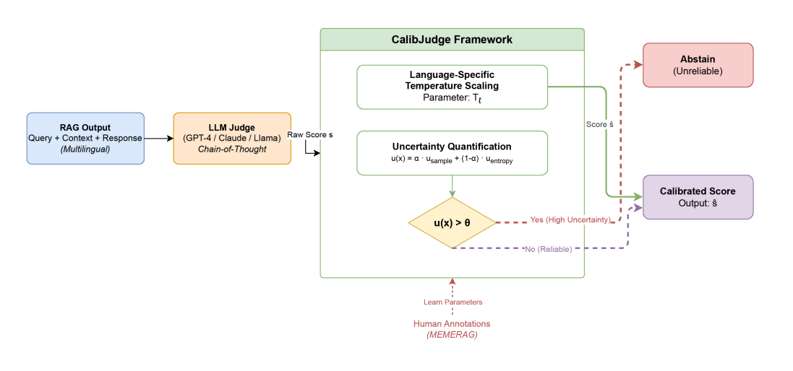
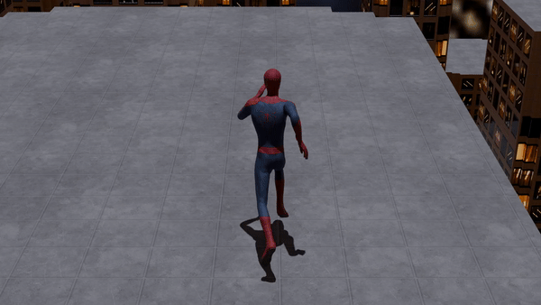
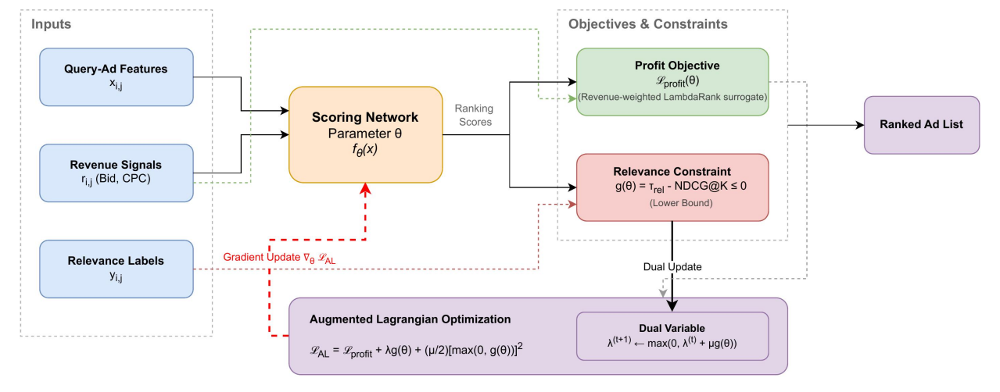
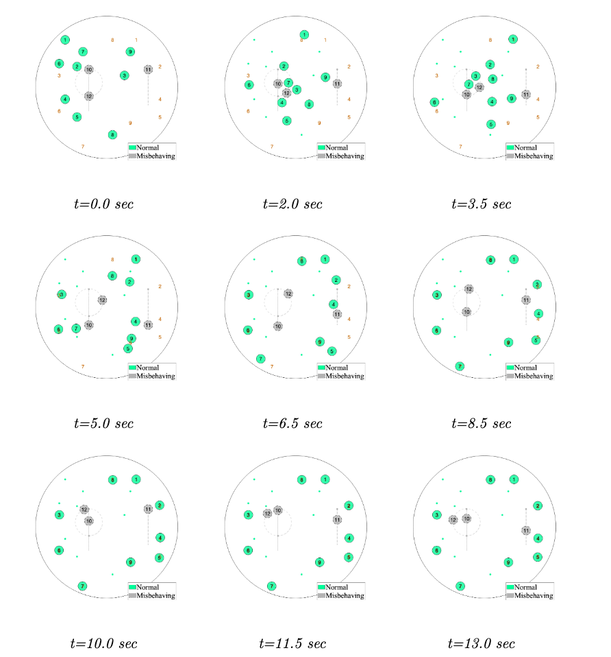
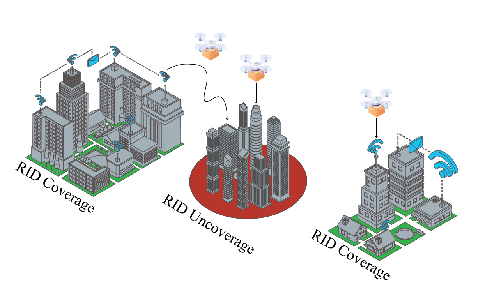
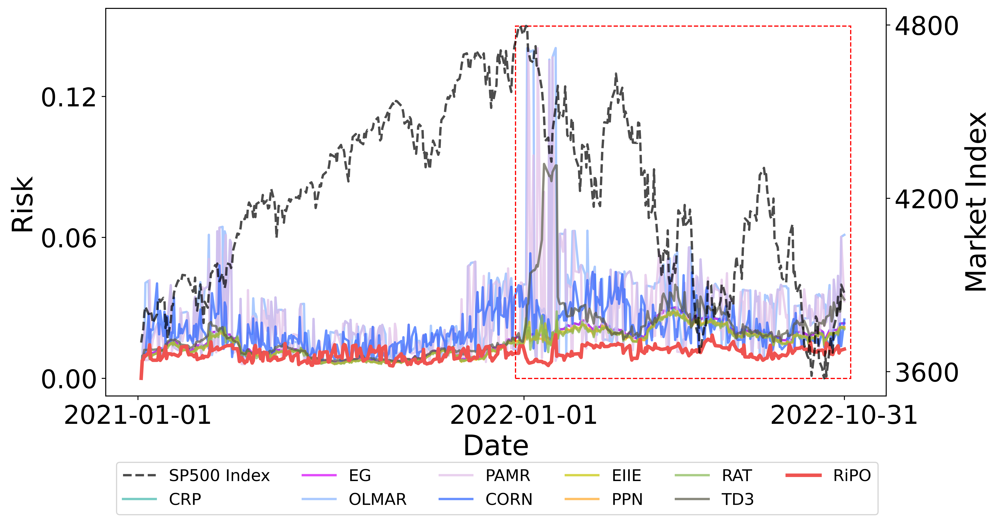
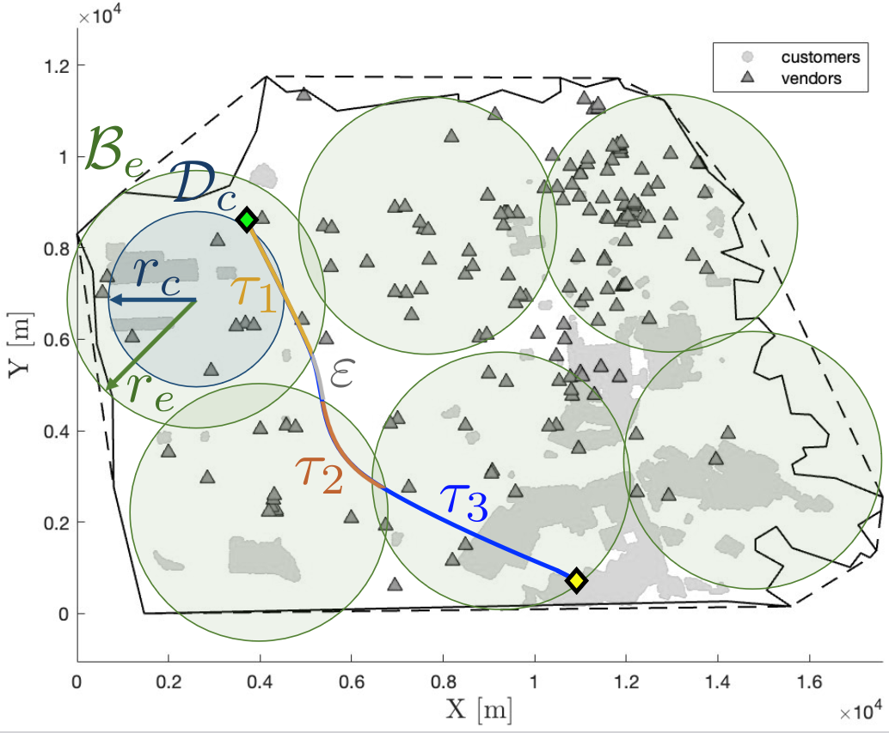
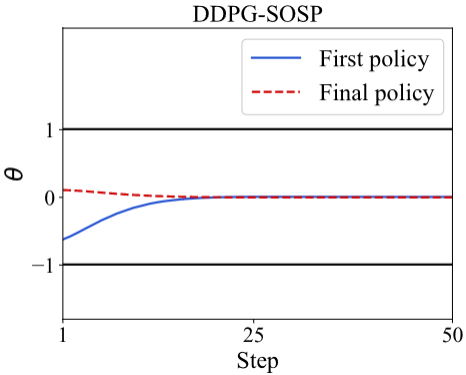
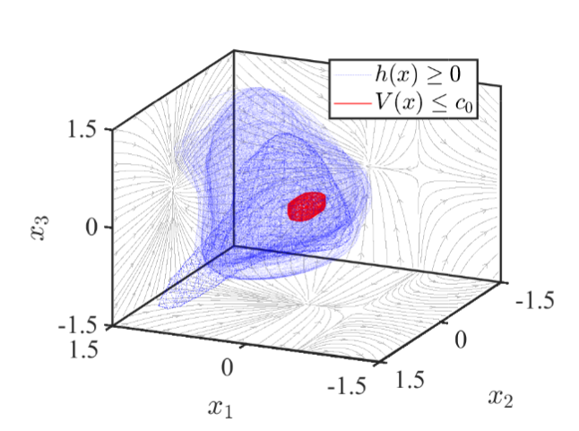
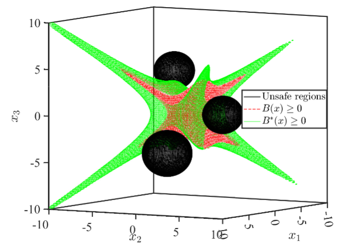

10 papers; *: equal contributions

A calibrated LLM-as-a-Judge framework for multilingual RAG evaluation with uncertainty-aware scoring.

Automatic synthetic video generation via multimodal agent collaboration with Vision LLMs and 3D engine scripting.

A constrained learning-to-rank formulation for balancing competing objectives in multi-objective ranking and recommendation systems.

Multi-task coordination of vehicles with bicycle models, developing Lyapunov-like barrier functions for collision avoidance, connectivity maintenance, and convergence under misbehaving agents.

A comprehensive framework characterizing surveillance coverage and trajectory privacy using Plausibly Reachable Zone (PRZ) and Envelope (PRE) metrics, applied to urban geographies of San Francisco, NYC, and Los Angeles.

RIPO framework integrating RL-based trading agents and barrier function-based risk controllers to balance long-term profits with acceptable short-term risk exposure.

Idealized analysis of Remote Identification coverage proportions for uncrewed aircraft systems, verified with San Diego urban dataset simulations.

Combining Sum-of-Squares programming with Reinforcement Learning to generate real-time controllers for diverse robotic applications.

Lyapunov-Barrier function approach for estimating certified Region-of-Attraction under noise, assessing stability of partially unknown systems.

Region-of-Attraction guided controller for stabilizing partially unknown dynamical systems approximated by Gaussian Processes, with strict probability guarantees.